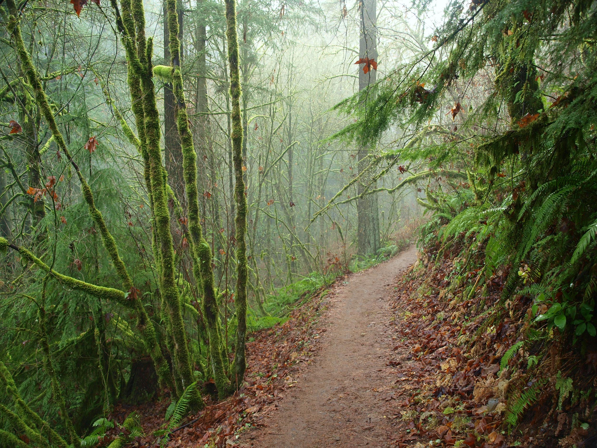

Wildwood Trail
Wildwood Trail is a 6.1 mile out and back trail located near Portland, OR that offers the chance to see wildlife and is rated as moderate. The trail is primarily used for hiking, walking, and trail running and is accessible year-round. Dogs are also able to use this trail but must be kept on leash.
Plan Your Trip
Trail Aspects:
- Exertion: Moderate, 6.1 Mile Out and Back
- Sights: Oldgrowth Forest, Alexandra (the exiled Dowager Governess of South Wood)
- Popularity: Moderate
- Open: All Year
Directions From Portland:
- Travel Time: Approximately 20 minutes (7.2 Miles from Portland)
- Head West on Burnside
- Take a slight right onto NW Skyline Blvd
- Turn right onto NW lightening Ridge Dr.
